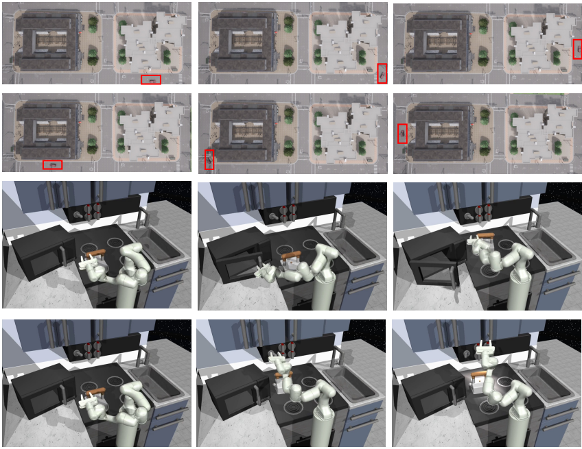
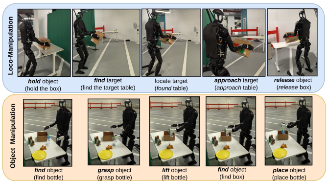
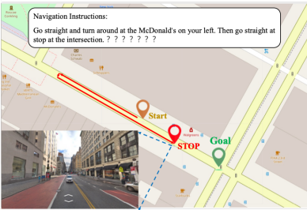
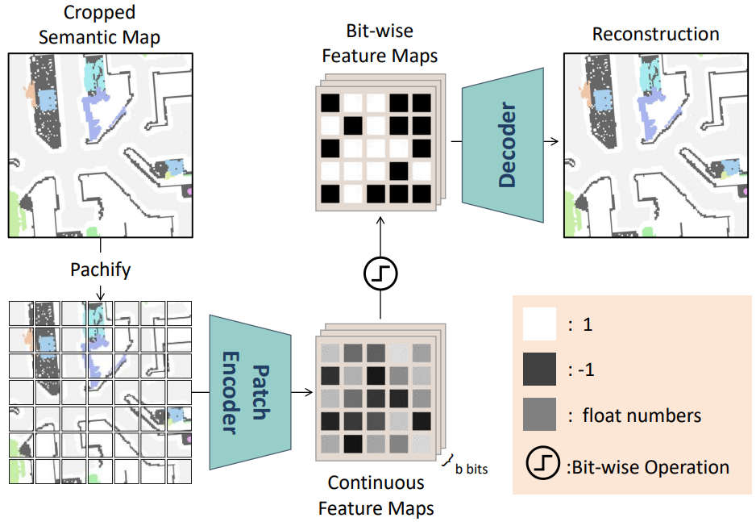
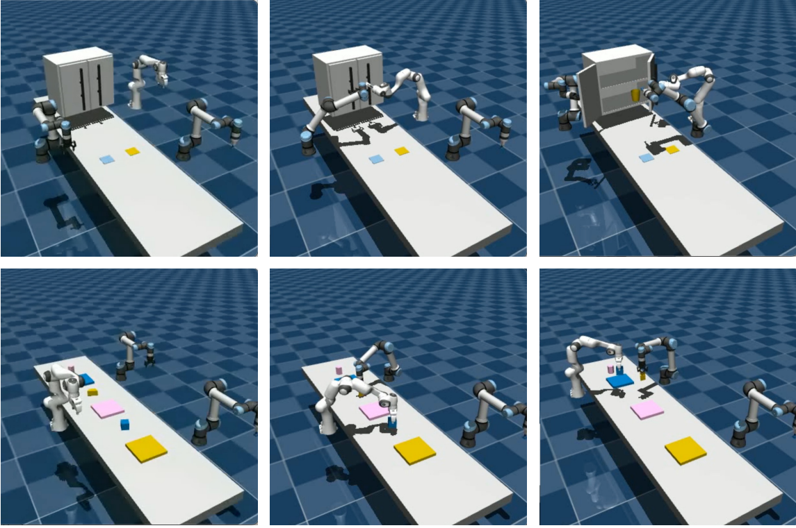

|
Geeta Chandra Raju, Bethala I am a Research Engineer at New York University Abu Dhabi, where I work in the Embodied AI and Robotics Lab (AIR Lab) and the Center for Artificial Intelligence and Robotics (CAIR) under the supervision of Prof. Yi Fang. I also collaborate with Prof. Mengyu Wang on embodied AI projects at the Harvard AI and Robotics Lab. I earned my M.S. in Mechatronics and Robotics from New York University Tandon School of Engineering—supported by the Tandon Merit Scholarship and an Andhra Pradesh State Government Fellowship—where I completed my master’s thesis under Prof. Yi Fang. During that time, I also served as a Research Assistant in the Ai4CE Lab with Prof. Chen Feng and in the MCRL with Prof. Vikram Kapila. I hold a B.Tech in Mechanical Engineering from Acharya Nagarjuna University, India. After earning my bachelor’s degree, I helped develop telepresence conference and inspection robots at a startup. Following my master’s, I joined NYU as a Research Scientist before moving to NYU Abu Dhabi. |

|
ResearchMy research centers on embodied AI and physical intelligence, with a special focus on intuitive human-robot collaboration. I aim to develop adaptive robotic systems—especially humanoids—that seamlessly interact with people in dynamic, real-world environments. |

|
H2-COMPACT: Human-Humanoid Co-Manipulation via Adaptive Contact Trajectory Policies
Geeta Chandra Raju. Bethala, H. Huang, N. Pudasaini, AM Ali, S. Yuan, C. Wen, A. Tzes, Y. Fang IEEE-RAS 24th International Conference on Humanoid Robots (Humanoids), 2025 arXiv / Webpage A legged humanoid that uses haptic cues to understand human intent and cooperatively carry loads with adaptive, stable locomotion. |
|

|
Wavelet Policy: Lifting Scheme for Policy Learning in Long-Horizon Tasks
H. Huang, S. Yuan, Geeta Chandra Raju. Bethala, C. Wen, A. Tzes, Y. Fang IEEE/CVF International Conference on Computer Vision (ICCV), 2025 arXiv A wavelet-based policy learning framework that enhances decision-making in complex, long-horizon tasks by analyzing observations across multiple scales for precise and reliable action planning. |
|
|
Socially-Aware Robot Navigation Enhanced by Bidirectional Natural Language Conversations Using Large Language Models
C. Wen, Y. Liu, Geeta Chandra Raju. Bethala, S. Yuan, H. Huang, Y. Hao, M. Wang, YS Liu IEEE/RSJ International Conference on Intelligent Robots and Systems (IROS), 2025 arXiv / Webpage / Code Socially aware robot navigation framework that combines deep reinforcement learning with language interaction, enabling robots to communicate with pedestrians and navigate safely in dynamic environments. |
|

|
Embodied Chain of Action Reasoning with Multi-Modal Foundation Model for Humanoid Loco-manipulation
Y. Hao*, Geeta Chandra Raju. Bethala*, N. Pudasaini*, H. Huang, S. Yuan, C. Wen, B. Huang arXiv preprint arXiv:2504.09532, 2025 arXiv A foundation-model framework that lets humanoid robots understand text instructions and perform complex loco-manipulation through multi-step reasoning. |
|

|
How secure are large language models (LLMs) for navigation in urban environments?
C. Wen, J. Liang, S. Yuan, H. Huang, Geeta Chandra Raju. Bethala, YS Liu, M. Wang, A. Tzes Under Review (Journal), 2024 arXiv This work exposes vulnerabilities in LLM-based robot navigation through novel prompt attacks and proposes initial defenses to enhance the security of autonomous navigation systems. |
|
|
Hierarchical Scoring with 3D Gaussian Splatting for Instance Image-Goal Navigation
Y. Deng, S. Yuan, Geeta Chandra Raju. Bethala, A. Tzes, YS Liu, Y. Fang Under Review, 2025 arXiv / Video Advanced instance image-goal navigation using hierarchical scoring and 3D Gaussian splatting for precise target localization. |
|

|
MapBERT: Bitwise Masked Modeling for Real-Time Semantic Mapping Generation
Y. Deng, S. Yuan, C. Wen, H. Huang, A. Tzes, Geeta Chandra Raju. Bethala, Y. Fang arXiv preprint arXiv:2506.07350 arXiv MapBERT is a transformer-based framework that predicts unobserved indoor regions from partial semantic maps, enabling spatially aware and efficient navigation for embodied agents. |
|

|
Integrating Retrospective Framework in Multi-Robot Collaboration
J. Liang, H. Huang, Y. Hao, Geeta Chandra Raju. Bethala, C. Wen, Y. Fang International Conference on Automation, Robotics, and Applications (ICARA), 2025 arXiv A retrospective actor-critic framework for multi-robot collaboration that enhances real-time decision-making and adaptability in dynamic environments. |
Cool Robot VideosCheck out some amazing robot demonstrations and research highlights! |
Social Navigation with communication
Socially-aware robot navigation with human interaction and path planning.
Social Navigation with communication
Advanced social navigation demonstrating human-aware robot behavior.

Motion Mimic
Humanoid robot mimicking human movements trained using RL.
Stand & Pick-Place
Humanoid performing sequential manipulation tasks.
Fight bot
Physics based whole body control for humanoid motion mimicking.
Whole body Inverse Kinematics
Inverse kinematics control for precise humanoid arm positioning.
Haptics based Loco-manipulation
Humanodi senses the forces applied on its hand and perform the actions
Object goal navigation
Object detection and goal navigation using camera and lidar slam in cluttered environments.
Navigation with SLAM
Navigation system demonstrating path planning and obstacle avoidance.
World-model navigation
Diffusion policy based navigation and obsticle avoidance.
Tool Manipulation
Precise screwdriver manipulation demonstrating fine motor control and tool usage with teleoperation.
Dexterous hand Teleoperation
RGB camera based teleoperation of dexterous robot hand.
VR Teleoperation
Virtual reality-based teleoperation for immersive robot control and data collection.
Can Manipulation
Object manipulation using imitation learning
Data collection by teleoperation
Data collection by teleoperation for fine graned robot learning.
Robot Squats
Humanoid robot performing squat exercises with proper form and balance control tranined using RL.
Humanoid flamenco
Humanoid robot performing rhythmic foot tap dance movements with coordination.
Exploration with tita robot
Exploration and mapping with a wheeled robot.
WHAM motion estimation
Whole-body human motion estimation for humanoid motion generation.
Telepresence
Enhancing Humanoid Robots with Voice and VR-Based Teleoperation for Social Interaction
Telepresence
Enhancing Humanoid Robots with Voice and VR-Based Teleoperation for Social Interaction
Humanoid-Dog Play
Humanoid robot interacting and playing with a robotic dog.
|
Website source code |